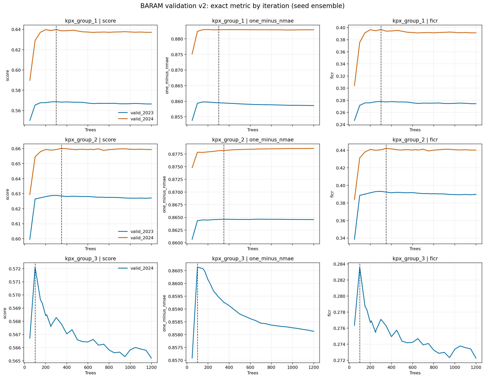
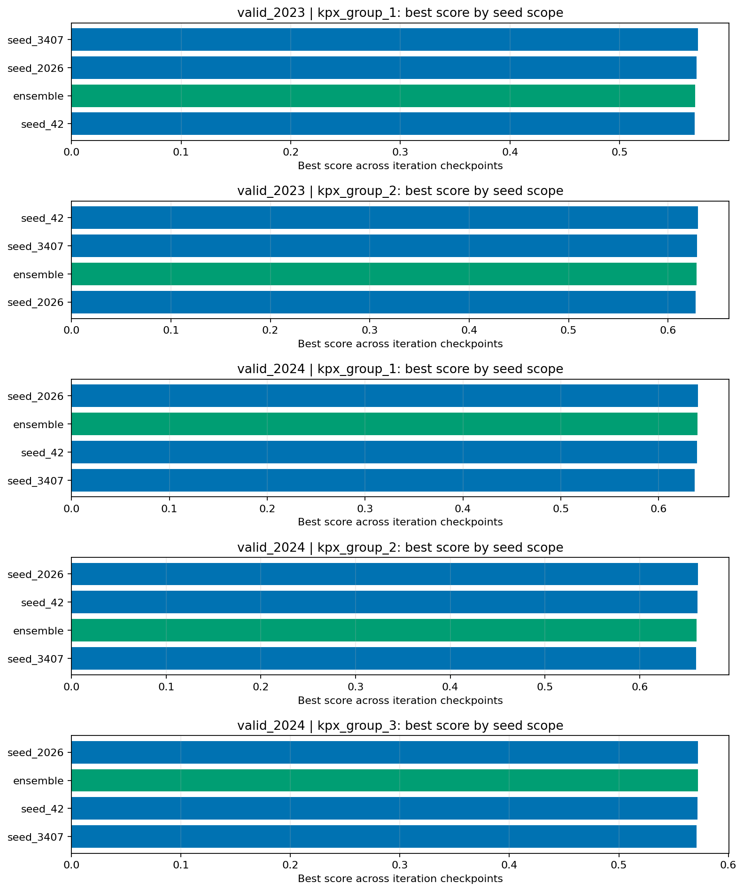

Seeds: [42, 2026, 3407] | Max trees: 1200 | Step: 50 | Weighted: True
Recommendations maximize the mean exact competition score across available annual folds. Group 3 normally has only the 2024 annual fold because 2022 labels are unavailable.
| target | iteration | folds | mean_score | min_score | std_score | mean_one_minus_nmae | mean_ficr | validation_warning |
|---|---|---|---|---|---|---|---|---|
| kpx_group_1 | 300 | 2 | 0.604285 | 0.568761 | 0.050238 | 0.871206 | 0.337364 | |
| kpx_group_2 | 350 | 2 | 0.644281 | 0.628445 | 0.022395 | 0.871413 | 0.417149 | |
| kpx_group_3 | 100 | 1 | 0.572107 | 0.572107 | 0.000000 | 0.860634 | 0.283581 | single annual fold; treat as provisional |
| fold | target | scope | iteration | train_rows | valid_rows | score | one_minus_nmae | ficr | nmae | within_6pct | within_8pct | evaluated_rows |
|---|---|---|---|---|---|---|---|---|---|---|---|---|
| valid_2023 | kpx_group_1 | ensemble | 300 | 8760 | 8757 | 0.568761 | 0.859494 | 0.278028 | 0.140506 | 0.269789 | 0.356572 | 5508 |
| valid_2023 | kpx_group_2 | ensemble | 300 | 8760 | 8758 | 0.628871 | 0.864594 | 0.393149 | 0.135406 | 0.311712 | 0.399963 | 5473 |
| valid_2024 | kpx_group_1 | ensemble | 300 | 17520 | 8778 | 0.639809 | 0.882917 | 0.396700 | 0.117083 | 0.332465 | 0.435671 | 4990 |
| valid_2024 | kpx_group_2 | ensemble | 350 | 17520 | 8778 | 0.660117 | 0.878196 | 0.442038 | 0.121804 | 0.346996 | 0.446253 | 4977 |
| valid_2024 | kpx_group_3 | ensemble | 100 | 8760 | 8778 | 0.572107 | 0.860634 | 0.283581 | 0.139366 | 0.282461 | 0.372455 | 4567 |
| fold | target | train_rows | official_valid_rows | reason |
|---|---|---|---|---|
| valid_2023 | kpx_group_3 | 0 | 8760 | no train labels |

